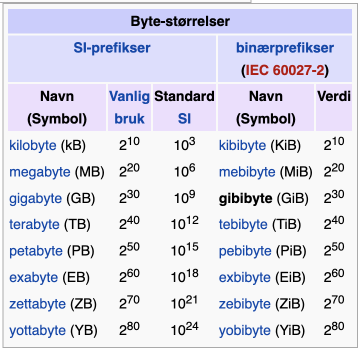

Heltall
I kvantifisering av observasjoner brukes det forskjellige benevninger. Siden de fleste datamaskiner i dag opererer i totallssystemet, finnes det egne benevninger for det. Når man leser at en datamaskin har 16 GB minne, er den egentlige verdien 16 GiB.
Figur 1. Byte størrelser og benevninger. (Bidragsytere til Wikimedia-prosjektene, 2005)
Hvordan er tall representert i en datamaskin?
De fleste homo sapiens har lært å tenke i titallssystemet, men tall kan bli representert i mange tallsystemer. Titallssystemet har base 10 (trolig pga. at homo sapiens har 10 fingre; base er antall tegn/symboler som blir brukt i tallsystemet), dvs. at alle tall kan skrives som en sum av multiplum av tallet 10. For eksempel, tallet 5270 kan skrives som
5 X 103 + 2 X 102 + 7 X 101 + 0 X 100
5 X 1000 + 2 X 100 + 7 X 10 + 0 X 1
5000 + 200 + 70 + 0 = 5270
X representerer multiplikasjon (multiplikasjonsoperatør)
+ representerer summering (addisjonsoperatør)
Vi har også valgt å tolke (lese) tallet fra venstre til høyre, dvs. vi har bestemt at den mest signifikante bit (som bidrar med størst verdi) er lengst til venstre. Vi kan også nummerere posisjonene til sifrene tallet slik at de representerer eksponenten til basistallet 10, dvs. sifferet på posisjon 3 skal multipliseres med 103:
3 2 1 0
5 2 7 0
De første designskisser av regnemaskiner brukte 10-tallssystemet, men det viste seg å være ineffektivt i praksis, siden alle praktiske implementasjonene uansett endte på å bruke mange AV og PÅ tilstander for lagring av representajoner av data.
Totallssystemet har base 2, dvs. to symboler, 0 og 1 for å representere alle tall som er definert i aritmetikken.
For å representere det samme tallet 5270ti i totallssystemet, må vi tenke på den høyeste multiplum av 2 som kan inngå i dette tallet. Her er 2 muliplumer for noen tall i titallssystemet:
0 1 (samme som 20)
1 2
2 4
3 8
4 16
5 32
6 64
7 128
8 256
9 512
10 1024
11 2048
12 4096
13 8192
14 16384
15 32768
16 65536 (samme som 216)
Vi ser at det høyeste multiplumet, som kan inngå i 5270ti er 4096ti. Nå må vi finne et 2 muliplum for resten som er174ti og det er 128ti. Resten er nå 46ti. Minste 2 multiplum er nå 32ti. Resten er 14ti og 2 multiplum er 8ti. Så er resten 6ti og 2 multiplum 4ti. Til slutt er resten 2ti, som er et 2 multiplum.
Da kan vi skrive tallet 5270ti med alle 2 multiplumer som vi har funnet:
4096ti + 128ti + 32ti + 8ti + 4ti + 2ti
Så kan vi skrive 2 multiplumer med basis 2 og tilsvarende eksponenter:
212ti + 27ti + 25ti + 23ti + 22ti + 21ti
Vi kan nå resonnere at det trenges minst 13 bits for å kunne representere 5270ti i totallssystemet:
12 11 10 9 8 7 6 5 4 3 2 1 0 <- posisjon
1 0 0 0 0 1 0 1 0 1 1 1 0
Nå ser vi at tallet 5270ti er 1000010101110to
I datamaskinen brukes det kun hele bytes (oktetter) for å lagre data, så derfor kan vårt tall lagres i 2 bytes (vi kunne brukt Go datatype int16).
0001 0000 1010 1110to
Når vi skriver tall, så skriver vi vanligvis ikke såkalte ledende nuller. Men i minne til datamaskinen lagres data i blokker og derfor blir ledende nuller med, når vi prøver å illustrer dette. For eksempel, hvis programmerer har valgt å bruke int64 i Go, så skal operativsystemets programmer prøve å allokere 64 bits i minne for vårt tall:
0000 0000 0000 0000 0000 0000 0000 0000 0000 0000 0000 0000 0001 0000 1010 1110to
Vi har delt opp i 4 bits blokker, som heter nibbles, med tanke på å overføre dette tallet til heksadesimalt tallsystem. Sekstentallsystemet brukes ofte for å gjøre illustrasjoner av binære tall kortere. I litteraturen om diverse data samlet under utførelse av programmer i et operativsystem, blir minneadresser og andre data ofte presentert i sekstentallssystemet:
00000000000010AEseksten
Man ser også ofte at heksadesimale tall markeres med en prefiks 0x, for eksempel, 5270ti = 0x00000000000010AE.
Nå kan vi konkludere med at, hvis vi har 64 posisjoner tilgjengelig, definerer bit lengst til venstre som den mest signifikante bit, så kan vi representere tall fra 0ti til (18 446 744 073 709 551 616 - 1)ti eller (264 - 1)ti.
La oss illustrere dette med 64 bit for hvert tall
0000 0000 0000 0000 0000 0000 0000 0000 0000 0000 0000 0000 0000 0000 0000 0000to = 0ti
0000 0000 0000 0000 0000 0000 0000 0000 0000 0000 0000 0000 0000 0000 0000 0001to = 1ti
0000 0000 0000 0000 0000 0000 0000 0000 0000 0000 0000 0000 0000 0000 0000 0010to = 2ti
... ... ... ...
1111 1111 1111 1111 1111 1111 1111 1111 1111 1111 1111 1111 1111 1111 1111 1101to = 18 446 744 073 709 551 613ti
1111 1111 1111 1111 1111 1111 1111 1111 1111 1111 1111 1111 1111 1111 1111 1110to = 18 446 744 073 709 551 614ti
1111 1111 1111 1111 1111 1111 1111 1111 1111 1111 1111 1111 1111 1111 1111 1111to = 18 446 744 073 709 551 615ti
En kompilator kan generere en feilmelding (eller avbrudd), hvis tallet som en prosessor prøver å lagre i minne er for stort (overflyt). Men hva hvis tallet er ikke kjent når kompileringen skjer, men blir beregnet av programmet basert på andre, lovlige, tall? Da må prosessor sende ut en melding om (overflyt), og programmet bør kunne fange den opp og enten avslutte på en best mulig måte eller, eventuelt, gi melding tilbake til brukerrommet og fortsette utførelsen av neste instruksjon.
Dette illustrerer at det er ikke nok å sette grenser for hvilke tall kan man lagre i datamaskinens minne (her mener vi alle typer minne, inkludert registrene, som kun kan presentere begrenset antall bits på grunn av begrensningene i maskinvaren). Vi må også betrakte hvilke operasjoner datamaskinen kan gjennomføre, og hva kan mulige resultater av operasjonene være? Vi må med andre ord se på minnebegrensningene i lys av operasjoner, som er tillatt (i designet) på dataene i minne.
Hva skjer hvis vi gjør en subtraksjon av to positive heltall, og prøver å subtrahere et større tall fra et mindre tall? I matematikken har man innført negative tall for å kunne tillate en slik operasjon. Hvordan kan vi presentere negative tall i en datamaskin?
En mulig design er å dedikere en bit for å representere fortegn til tallet. En slik tilnærming kalles for "fortegn og størrelse"-metoden. Det er flere ulemper med denne metoden:
- først er det ikke åpenbart hvor i bit-sekvensen er det best å plassere fortegn-bit; først, sist?
- kretsene som adderer må gjennomføre en ekstra steg for å sette fortegn
- introduserer problemet med positiv og negativ null (0), som kan skape problemer for programmerere
"fortegn og størrelse"-metoden ble derfor forkastet. I søket for et bedre design, spørsmålet som kom opp var, hva skulle resultatet være for et tall uten fortegn (positive), hvis man prøvde å subtrahere et stort tall fra et lite. Svaret er at man skulle da "låne" fra de ledende nullene og resultatet skulle da bli en sekvens av ledende enere.
La oss prøve å subtrahere 1111to = 15ti fra 0011to = 3ti
// Ifølge aritmetikken
0011 - 1111
// er det samme som
- (1111 - 0011)
// substitusjon mindre tall fra større tall
1111
- 0011
-------
1100
// derfor
- (1100)to = - 12ti
Men vi ender opp med "fortegn og størrelse", dvs. at det trenges en ekstra bit for å reperesentere -12ti binært, siden 4 bits representasjon er allerede brukt for å representere det positive 12ti.
Løsningen var å bestemme at ledene nuller betyr positivt tall og ledende enere betyr negativt, og holde seg til samme antall bits. Det fører til halvering av størrelsen på positive tall, som man kan representere med samme antall bits. Vi kan illustrere det med følgende tabell:
Bin Pos Pos&Neg
0000 0 0
0001 1 1
0010 2 2
0011 3 3
0100 4 4
0101 5 5
0110 6 6
0111 7 7
1000 8 -8
1001 9 -7
1010 10 -6
1011 11 -5
1100 12 -4
1101 13 -3
1110 14 -2
1111 15 -1
Legg merke til at denne representasjonen er ikke symmetrisk, dvs. man kan ikke inkludere en +8, siden 0 opptar den ene positive plassen.
Her er et kodeeksempel hvor en Go programmerer, som ikke kjenner til representasjon av tall i minne, kan få seg en overraskelse:
var tall int8 = 127
fmt.Println(tall + 1) // skriver ut -128
fmt.Println(tall + 2) // skriver ut -127
var utall uint8 = 127
fmt.Println(utall + 1) // skriver ut 128
fmt.Println(utall + 2) // skriver ut 129
utall = 255
fmt.Println(utall + 1) // skriver ut 0
Disse er ulempene må man leve med, hvis man bruker en såkalt "2s complement"-metode istedenfor "fortegn og størrelse"-metoden. Så begge metodene har sine ulemper, men "2s complement" er dominerende i dag. Typen uint8 er en såkalt "8 bits unsigned int". Vi kan også resonnere oss til at grenseverdiene for de forskjellige heltallstypene i Go er:
int min - max: -9223372036854775808 - 9223372036854775807
int8 min - max: -128 - 127
int16 min - max: -32768 - 32767
int32 min - max: -2147483648 - 2147483647
int64 min - max: -9223372036854775808 - 9223372036854775807
uint min - max: 0 - 18446744073709551615
uint8 min - max: 0 - 255
uint16 min - max: 0 - 65535
uint32 min - max: 0 - 4294967295
uint64 min - max: 0 - 18446744073709551615
Så hva er "2s complement" metode?
Det ene er å bestemme at alle binære tall som begynner med 0 er positive og alle som begynner med 1 er negative. Det andre er, hvordan skal man kunne utføre aritmetikken med en slik representasjon? Operativsystemets programmer må ha en måte for å gjøre det på.
Definisjon
Den matematiske definisjonen på "2s complement" er at den er en matematisk operasjon for å konvertere et positivt binærtall til et negativt binærtall med ekvivalent negativ verdi, ved å bruke, som nevnt ovenfor, den mest signifikante bit, som indikator for fortegn (0 => +, 1 => -).
00001001to -> 2s-compl -> 11110110to
La oss si at vi ønsker å konvertere 9ti til -9ti
Metoden har to steg:
- konverter alle bit til det motsatte, dvs. alle 0 til 1 og alle 1 til 0:
00001001 => inverter 11110110 - og legg til 1 (1 og 1 gir null og 1 går i mente til neste posisjon):
<- i mente (en. carry) 11110110 + 00000001 ---------- 11110111
Vi kan også observere et mønster, - hvis vi kun inverterer et positivt binært tall, så for vi et negativt tall med den absolutte verdien som er den absolutte verdien til det positive tallet plus 1. For eksempel, hvis vi inverterer 0, så får vi -1, hvis vi inverterer 1, så får vi -2 osv.
Hvordan kan vi vise at subtraksjon er gyldig også med "2s complement"?
La oss subtrahere 11ti fra 9ti, som i titallssystemet har resultat -2ti. Vi bruker 8-bit for hvert tall i det binære systemet.
9ti = 00001001to
11ti = 00001011to
9ti - 11ti = 9ti + (-11ti) = -2ti
00001011to = 11ti
11110100to = -12ti
+ 1
---------
11110101to = -11ti
1 <- carry
00001001to = 9ti
+ 11110101to = -11ti
----------
11111110to = -2ti